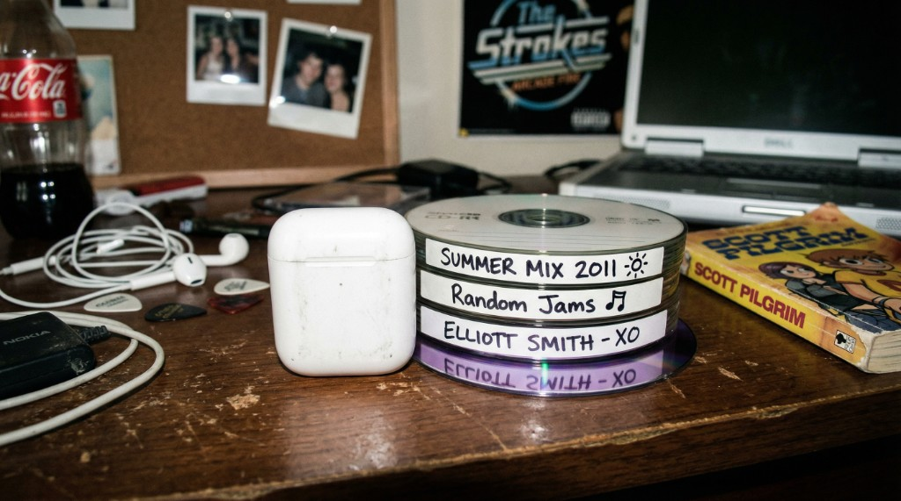

Recently, something genuinely surprised me: I realized I was participating in the sudden resurgence of 2010s aesthetics on social media. It started subtly. I found myself posting photos with grainy filters and flash, similar to what I used to post on early Instagram around 2016. I also added older electropop songs — Rihanna's tracks from that era — back into my playlists. Online, I began seeing more outfits styled with the "effortless" Tumblr-era look. Many of my friends were doing the same, with similar visual edits and softer nostalgic tones.
This made me pause and wonder why I was naturally making these choices. At first, I assumed it was just another predictable nostalgia cycle. But the more I observed, the more it felt like something deeper than a simple retro trend.

What appears to be a stylistic revival may actually reflect a broader cultural mindset shift — less about the past itself and more about how people want to feel in the present.
What sparked my curiosity was how consistent the signals were across different spaces. On social media, these aesthetics were presented almost as a comfort zone — less polished and more personal than today's hyper-optimized feeds. That contrast made me think about the pace of current digital life: a sense that everything moves too quickly to hold onto in short videos and algorithms. The revival of the early 2010s began to feel like an emotional response to acceleration in the present.
I noticed a parallel in advertising while watching the 2026 Super Bowl. Recent ad rankings showed that the most positively received campaigns came from long-established brands like Budweiser, Lay's, and Pepsi, leaning into familiarity in everyday snacks and drinks while drawing on their brand legacy. Technology brands also adopted a warmer tone. For example, Google's Gemini Super Bowl ad told a sentimental story of a mother helping her young son adjust to moving homes — using AI to visualize their new space in a comforting way instead of presenting a purely futuristic spectacle. Across both legacy and newer brands, the shared strategy seemed to center on reassurance rather than simply showcasing innovation.
That convergence surprised me: despite their differences, these brands all seemed to speak to the same desire for comfort. This made me realize that the nostalgia we see online is not necessarily an accurate recreation of the 2010s, but a curated version of it. It emphasizes familiarity.
In that sense, the trend is less about the past itself and more about how people want to feel in the present. This changed how I see trends — as signals of how people want to feel, not just what they want to look at. It also made me wonder if the current 2020s will eventually be remembered in a similarly nostalgic way — and if so, which parts of this moment we'll choose to keep.